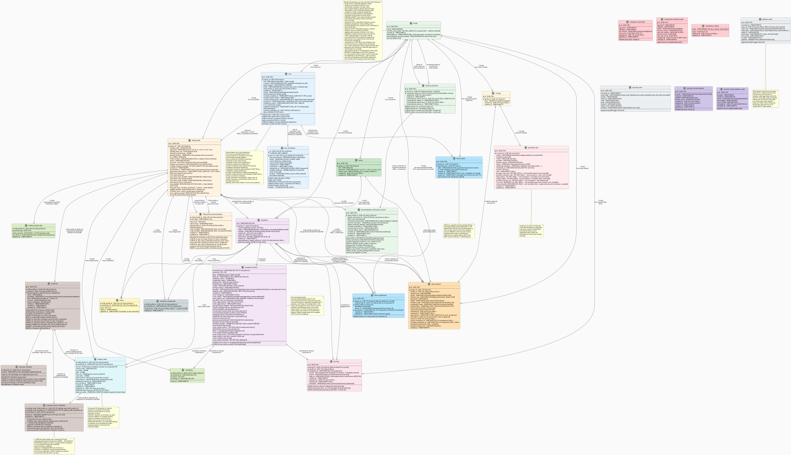

Data Model
CYO Adventure has nine PostgreSQL tables managed by SQLAlchemy 2 async ORM and
Alembic migrations. All timestamps are TIMESTAMP WITH TIME ZONE. Enum-like columns
(role, status, age_band) are stored as strings and validated at the application
boundary, which keeps Alembic migrations simple and avoids enum-type churn.
Entity-Relationship Diagram¶

Table Reference¶
family¶
The ownership root. Every other entity is scoped to a family. Family ownership is checked on every resource access; a valid token for family A cannot reach family B's data.
| Column | Type | Notes |
|---|---|---|
| id | UUID PK | |
| name | VARCHAR(200) | Display name |
| created_at | TIMESTAMPTZ | Server default |
user¶
An authenticated user within a family. Role is guardian, child, or admin.
| Column | Type | Notes |
|---|---|---|
| id | UUID PK | |
| family_id | UUID FK | family.id |
| role | VARCHAR(16) | guardian, child, or admin |
| authn_subject | VARCHAR(255) UNIQUE | OIDC sub claim |
| child_profile_id | UUID FK NULL | child_profile.id; NULL for guardians and admins |
| created_at | TIMESTAMPTZ |
child_profile¶
Per-child reading profile. Age band and content caps filter which stories are visible.
tts_enabled gates the Web Speech API read-aloud feature.
| Column | Type | Notes |
|---|---|---|
| id | UUID PK | |
| family_id | UUID FK | family.id |
| display_name | VARCHAR(120) | Used in PII screening |
| age_band | VARCHAR(16) | one of 3-5, 5-8, 8-11, 10-13, 13-16, 16+ |
| reading_level_cap | FLOAT | Flesch-Kincaid cap; default 99.0 |
| allowed_content_flags | JSONB | Per-flag content permissions |
| tts_enabled | BOOLEAN | TTS feature flag |
| avatar | VARCHAR(255) NULL | |
| created_at | TIMESTAMPTZ |
storybook¶
The lifecycle row for a story. One row per story id, regardless of how many versions
have been generated. current_published_version points to the version visible to
children.
| Column | Type | Notes |
|---|---|---|
| id | VARCHAR(120) PK | Stable across versions |
| family_id | UUID FK | family.id |
| current_published_version | INT NULL | NULL until first publish |
| status | VARCHAR(20) | State machine: see below |
| created_by | UUID FK NULL | user.id of guardian who created it |
| created_at | TIMESTAMPTZ |
Status values: draft, in_review, needs_revision, published, archived
(see publishing/state_machine.py). There is no generating, auto_check, or
approved storybook status; staged-generation state lives in generation_job, and
publication is the admin approve action.
storybook_version¶
An immutable snapshot of a story. Composite primary key (storybook_id, version).
| Column | Type | Notes |
|---|---|---|
| storybook_id | VARCHAR(120) PK FK | storybook.id |
| version | INT PK | Monotonically increasing |
| blob | JSONB | Full Storybook JSON (Phase 1 inline storage) |
| blob_ref | VARCHAR(512) NULL | MinIO object key (reserved, Phase 5) |
| validation_report | JSONB NULL | Gate report at generation time |
| moderation_report | JSONB NULL | Moderation report |
| approved_by | UUID FK NULL | Admin user who approved (global, cross-family) |
| published_at | TIMESTAMPTZ NULL | |
| model | VARCHAR(120) NULL | LLM model id used |
| prompt_version | VARCHAR(120) NULL | Prompt template version |
| created_at | TIMESTAMPTZ |
At launch the Storybook JSON is stored inline in blob (JSONB). The blob_ref
column is deferred: it holds the MinIO object key once object storage is wired
(ADR-009 defers MinIO to a future object-store target). The schema is versioned at
2.0 and validated on read with a reject-on-mismatch check; there is no upcaster,
so a stored blob whose schema_version does not match is rejected rather than
migrated (ADR-001).
reading_state¶
Per-child, per-story reading progress. Composite primary key (child_profile_id, storybook_id).
A composite foreign key (storybook_id, version) references storybook_version to
prevent saving state for a version that does not exist.
| Column | Type | Notes |
|---|---|---|
| child_profile_id | UUID PK FK | child_profile.id |
| storybook_id | VARCHAR(120) PK FK | storybook.id |
| version | INT | Pinned via composite FK to storybook_version |
| current_node | VARCHAR(120) | Current node id |
| var_state | JSONB | Variable values (Tier-2 only) |
| path | JSONB | Ordered list of visited node ids |
| visit_set | JSONB | Set of visited nodes (drives once: true effects) |
| save_slots | JSONB | Named state snapshots |
| state_revision | INT | Server-owned OCC counter |
| last_event_id | VARCHAR(64) NULL | Idempotency key for offline replay |
| updated_by_device_id | VARCHAR(64) NULL | Device that last wrote |
| last_synced_at | TIMESTAMPTZ NULL | |
| created_at | TIMESTAMPTZ | |
| updated_at | TIMESTAMPTZ | onupdate=func.now() |
completion¶
Records that a child found a particular ending of a story version. Composite
primary key (child_profile_id, storybook_id, version, ending_id).
| Column | Type | Notes |
|---|---|---|
| child_profile_id | UUID PK FK | child_profile.id |
| storybook_id | VARCHAR(120) PK | |
| version | INT PK | |
| ending_id | VARCHAR(120) PK | Stable ending id from Storybook |
| found_at | TIMESTAMPTZ | Server default |
concept¶
The intake form for a guardian's story request. A ConceptBrief payload is validated
at the application boundary by the Pydantic model before insertion. Immutable once
written.
| Column | Type | Notes |
|---|---|---|
| id | UUID PK | |
| family_id | UUID FK | family.id |
| brief | JSONB | Full ConceptBrief JSON |
| created_by | UUID FK NULL | Guardian user who submitted |
| created_at | TIMESTAMPTZ |
generation_job¶
Tracks one staged-generation attempt for a concept. Status transitions:
queued -> running -> passed | needs_review | failed.
| Column | Type | Notes |
|---|---|---|
| id | UUID PK | |
| concept_id | UUID FK | concept.id |
| status | VARCHAR(20) | queued, running, passed, needs_review, failed |
| model | VARCHAR(120) NULL | LLM model id |
| provider | VARCHAR(120) NULL | Provider name |
| prompt_version | VARCHAR(120) NULL | |
| report | JSONB NULL | Full GenerationOutcome JSON |
| storybook_id | VARCHAR(120) NULL | Not a FK (see note) |
| version | INT NULL | Storybook version produced |
| error | VARCHAR(512) NULL | Short error on failure |
| created_at | TIMESTAMPTZ | |
| updated_at | TIMESTAMPTZ | onupdate=func.now() |
storybook_id is intentionally not a foreign key. A job may fail before any
storybook row is created; a hard FK constraint would block inserting the failure
record. The application layer verifies the storybook row exists independently when
reading this field.
Authorization Pattern¶
Family ownership is checked on every resource. The Principal in api/deps.py carries
family_id and profile_ids. Every endpoint calls authorize_family() and/or
authorize_profile() before touching any row. See
docs/planning/authorization-matrix.md for the full access matrix.